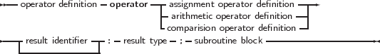
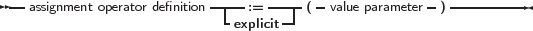
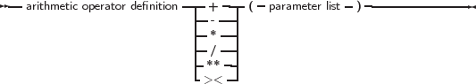
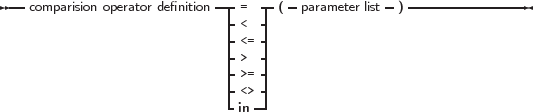

To define the action of an operator is much like defining a function:
_________________________________________________________________________________________________________
Operator definitions




___________________________________________________________________
The parameter list for a comparison operator or an arithmetic operator must always contain 2 parameters, with the exception of the unary minus, where only 1 parameters is needed. The result type of the comparison operator must be Boolean.
Remark: When compiling in Delphi mode or Objfpc mode, the result identifier may be dropped. The result can then be accessed through the standard Result symbol.
If the result identifier is dropped and the compiler is not in one of these modes, a syntax error will occur.
The statement block contains the necessary statements to determine the result of the operation. It can contain arbitrary large pieces of code; it is executed whenever the operation is encountered in some expression. The result of the statement block must always be defined; error conditions are not checked by the compiler, and the code must take care of all possible cases, throwing a run-time error if some error condition is encountered.
In the following, the three types of operator definitions will be examined. As an example, throughout this chapter the following type will be used to define overloaded operators on :
This type will be used in all examples.
The sources of the Run-Time Library contain 2 units that heavily use operator overloading: